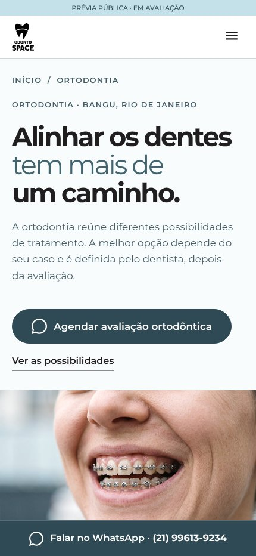
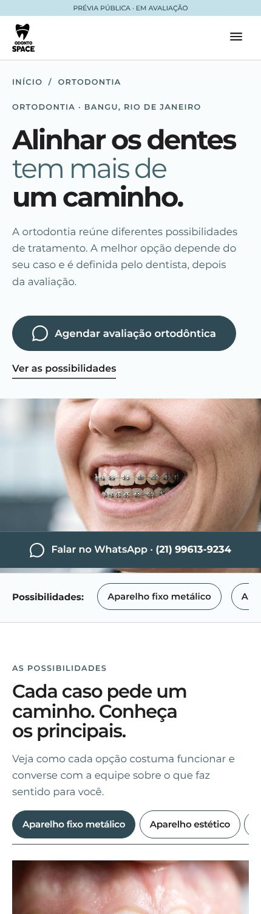
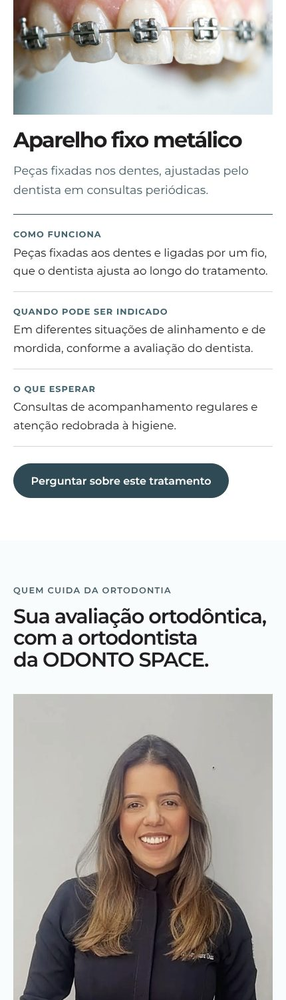
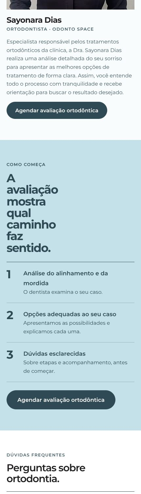
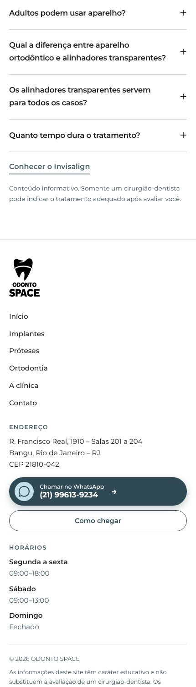
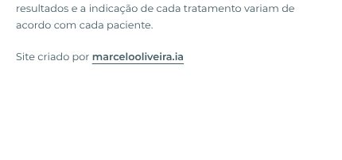

Ortodontia — largura 430 px (viewport 430×932)
Todas as imagens estão em tamanho real: 1 px da imagem = 1 px CSS (escala 1×, sem zoom). Capturadas na v11 pública, em Chromium com emulação de celular.
Medições automáticas (apenas informativas)
| Altura total da página | 6202 px |
|---|---|
| Largura da página / da janela | 430 px / 430 px |
| Rolagem horizontal | não |
| Imagens na página / quebradas | 7 / 0 |
| Elementos que passam da borda da tela | nenhum detectado |
| Erros de console | 0 |
1. Primeira tela (viewport 430×932, com faixa superior, cabeçalho e barra fixa de WhatsApp)

2. Página inteira (430×6202 px) — um único arquivo
img/ortodontia-430-inteira.jpg (a imagem é muito alta; para inspecionar com detalhe use os trechos abaixo)

3. Trechos em sequência (5 partes de até 1500 px de altura, sem sobreposição)





Observação: nas capturas de página inteira o cabeçalho fixo aparece só no topo e a barra fixa de WhatsApp aparece uma vez, na posição da primeira tela. Para ver esses elementos acompanhando a rolagem, use a ferramenta ao vivo (modo viewport).